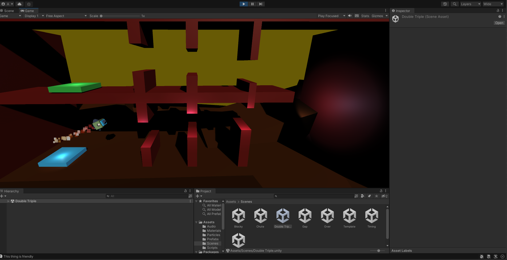

Project Rocket Booster
Project links
Itchio →Skills
About this project
The Rocket Booster game is a Unity-based project developed as part of a follow-along course from Udemy's GameDev.tv series. In this project, players control a rocket using the spacebar for thrust and the A/D keys to rotate the rocket, navigating through dynamic levels filled with obstacles. This project allowed me to explore various basic Unity concepts, such as physics-based movement, collision detection, and game object manipulation. Through the development process, I gained a deeper understanding of Unity's Rigidbody system, input handling, and scene management. The game focuses on level design and gameplay mechanics, challenging players' reflexes and strategic thinking. As I continue refining the game, I am gaining hands-on experience in improving controls, designing engaging levels, and integrating 3D assets, all while deepening my foundational Unity skills.